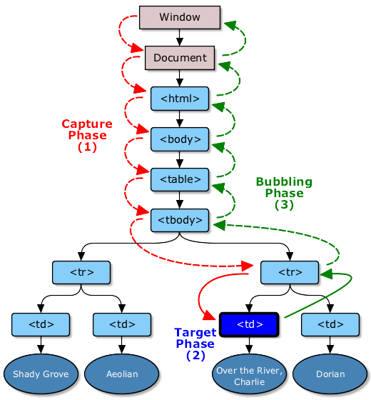

当一个dom事件被触发的时候,他并不是只在他的起源对象上触发一次,而是会经历三个不同的阶段,简而言之:事件一开始从文档 的根节点流向目标对象(捕获阶段),然后在目标对向上被触发(目标阶段),之后再回溯到文档的根节点(冒泡阶段)如图所示(图片来自w3c):
事件的第一个阶段是捕获阶段。事件从文档的根节点出发,随着dom树的结构向事件的目标节点流去,途中经过各个层次的DOM节点, 并在各节点上触发捕获事件,直到到达时间的目标节点,捕获阶段的主要任务是建立传播路径,在冒泡阶段,时间会通过这个路径回溯 到文档根节点。在实际应用中,我们并没有太多使用捕获阶段监听的用例,但是通过在捕获阶段对事件的处理,我们可以阻止类似click事件在某个特定元素上被触发。
let form = document.querySelector('form');
form.addEventListener('click', (e) => {
e.stopPropagation();
},true);
如果你对这种用法不是很理解的话,最好还是设置为false或者undefined,从而在冒泡阶段对事件进行监听。
对于多层嵌套的节点,鼠标和指针事件经常会被定位到最里层的元素上。假设,你在一个div元素上设置了click的监听函数,而用户点击 在了这个div元素内部的p元素上,那么p元素就是这个时间的目标元素。事件冒泡让我们可以在这个div或者更上层的元素上监听click 事件,并且事件传播过程中触发回调函数。
事件在目标事件上触发后,并不在这个元素上终止。它会随着dom树一层层向上冒泡,直到到达最外层的根节点。也就是说,同一事件会一次在 目标节点的父节点,父节点的父节点...直到最外层的节点上触发。
绝大多数事件是会冒泡的,但并非所有的。
由上我们可以想到,可以使用事件代理实现对每一个li的监听。
window.onload = function() {
var ulNode = document.getElementById('list');
ulNode.addEventListener('click', (e) => {
if (e.target && e.target.nodeName.toUpperCase() === "LI") {
alert(e.target.innerHTML);
}
}, false);
}